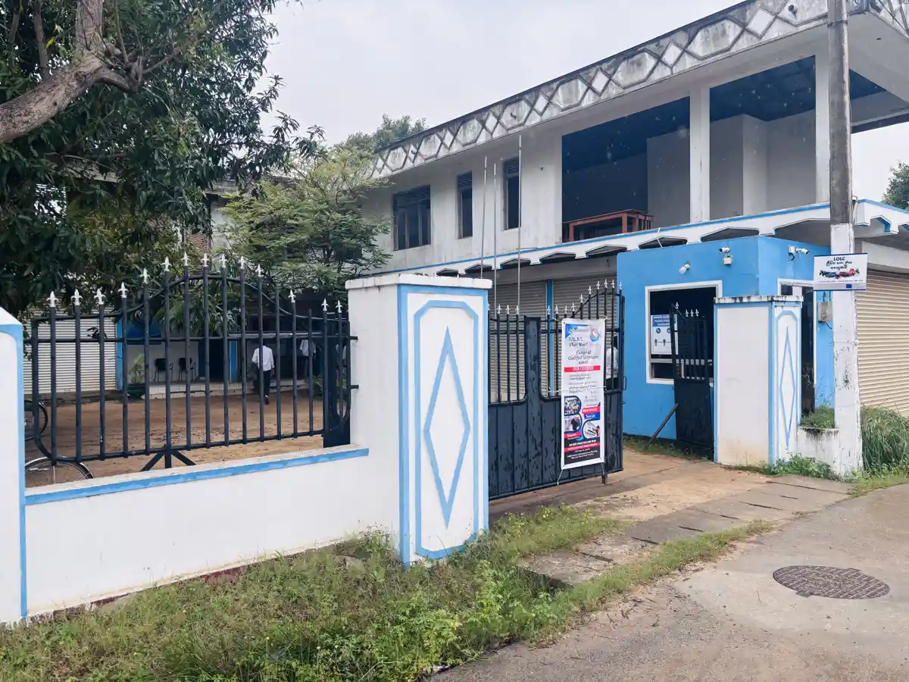

The Insight Foundation offers a seamless continuum of training and academic programmes across its four Technical colleges - Mawanella, Puttalam, Colombo, and Akurana - spanning vocational skills development and at IIMT Campus foundation to degree - level higher education. Every programme is designed with a single purpose: to lead directly into employment, entrepreneurship, or further study, ensuring that each learner can progress confidently from their first skill to their first career.
IIMT Campus (Insight Institute of Management and Technology) delivers English-medium academic programmes accredited through leading UK qualification bodies and the University of Colombo School of Computing (UCSC). IIMT Campus is also developing transnational education (TNE) partnerships with universities in the United Kingdom, enabling students to earn internationally recognised qualifications delivered entirely in Sri Lanka — with no flying faculty and no requirement for overseas travel.
ABE Endorsed — building professional English communication skills for academic and workplace contexts.
ABE Endorsed — building analytical, managerial and data-driven decision-making competencies.
ABE Endorsed — covering core IT principles, software applications, and digital skills.
Internationally recognised business qualification delivered through Pearson (Edexcel) accreditation.
UK-accredited IT qualification covering systems, programming, networking and digital infrastructure.
Foundation in IT — University of Colombo School of Computing (UCSC). Entry-level qualification leading to the BIT External Degree.
The BIT External Degree Programme offered through the University of Colombo School of Computing (UCSC) — Sri Lanka's first and most recognised external IT degree, delivered locally at IIMT Campus as an authorised learning centre.

Designed for working professionals, entrepreneurs, and business owners seeking practical, industry-relevant skills outside the traditional academic calendar.
Equipping graduates and professionals with the knowledge and skills to establish and grow their own enterprises.
Building commercial competencies in sales strategy, customer engagement and market development.
Intensive practical workshops delivering business skills, financial management and leadership to working professionals.
ICT delivers TVEC-accredited NVQ Level 3 and Level 4 programmes across four training centres — building hands-on, competency-based skills for real-world careers. ICT is also pursuing a structured upgrade pathway from NVQ Level 4 towards NVQ Level 7 by 2030, alongside international skills-recognition partnerships including qualification-mapping discussions with Australia's Skills Development Academy for NVQ-to-AQF equivalency.
NVQ Level 3 & 4 — covering engine systems, diagnostics, transmission and vehicle maintenance for the automotive industry.
Electrical installation technology — domestic, commercial and industrial wiring, safety standards and power systems aligned with national requirements.
Installation, servicing and repair of domestic and commercial refrigeration and HVAC systems.
Practical IT skills covering office applications, PC assembly, troubleshooting and network configuration.
PC hardware servicing, network configuration and IT infrastructure skills for the technology sector.
Training early childhood educators with child development theory, classroom management and inclusive teaching methods.
Computer graphics and digital design — covering visual communication, branding, print and digital media production for the creative industry.
ICT is pursuing a structured upgrade from NVQ Level 4 towards NVQ Level 7 by 2030, alongside qualification-mapping discussions with Australia's Skills Development Academy for NVQ-to-AQF equivalency.
Strategically located to serve students from Colombo to the Northern and Central provinces.
Kandy Road, Ganethenna, Hingula, Mawanella — the Foundation's original training centre and administrative headquarters.

Serving the North Western Province with NVQ vocational programmes.
Accessible urban training centre serving the Western Province.
Serving the Central Province with Tamil-medium NVQ delivery.
The Insight Foundation's Education Development project extends the Foundation's training mission into community and educator development — short courses, workshops, and capacity-building initiatives designed to strengthen the broader educational ecosystem around our campuses, not just the students enrolled within them. This programme is designed for all schools in Sri Lanka, helping them develop both their core education and extra-curricular offerings.

Helping partner schools set clear, achievable institutional development goals aligned with national education priorities.
Building stronger links between schools, parents, and the wider community to support student outcomes.
Professional development for educators to strengthen classroom practice and teaching effectiveness.
Structured training pathways for school staff and administrators to improve institutional performance.
Strengthening foundational learning at the primary level to build skills for lifelong progress.
Supporting scouting and character-building programmes in schools to develop well-rounded young people.
Helping students make informed choices about further study and careers through structured guidance frameworks.
Bringing digital tools and digital literacy into the classroom to prepare students for the modern economy.
Targeted support to raise mathematics outcomes for students across partner schools.
Broadening student development beyond the core curriculum through structured activity programmes.
Introducing students to robotics and computational thinking to build future-ready STEM skills.
Improving the physical learning environment in partner schools to create better spaces for education.